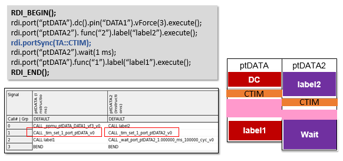

portSync()
Creates a dummy pattern to synchronize the pattern of different ports in a multiport test.
It can be used to synchronize the patterns of all ports or synchronize the patterns of selected ports.
Syntax
portSync(const string &port); portSync(); portSync(mode);
Parameter |
Description |
|---|---|
port |
The ports to be synchronized, separated by comma. If not specified, the patterns of all ports will be synchronized. |
mode |
The execution mode. TA::CTIM: Used to insert patterns with CTIM (Change TIMing) instructions for multiple ports synchronization. The CTIM instructions change test setup to the current timing set and achieve port synchronization. |
Examples
Example 1
RDI_BEGIN();
rdi.port("ptDATA").func().label("lpDcap").execute();
rdi.port("ptDATA2").digCap("mcsame1").pin("DATA2").samples(30).execute();
rdi.port("ptDATA").wait(10 ms);
rdi.portSync();
rdi.port("ptDATA2").digCap("mcsame2").pin("DATA2").samples(80).execute();
RDI_END();
Synchronizing selected ports:
RDI_BEGIN();
rdi.port("pt_DATA1").dc().pin("DATA1").vForce(1 V).execute();
rdi.port("pt_DATA1").wait(30 us);
rdi.port("pt_DATA2").dc().pin("DATA2").iForce(0 mA).vMeas().execute();
rdi.port("pt_DATA3").hwRelay().pin("DATA3").setOn("ALL").execute();
rdi.port("pt_DATA4").hwRelay().pin("DATA4").setOn("ALL").execute();
rdi.port("pt_DATA4").wait(10 us);
rdi.portSync("pt_DATA1,pt_DATA2"); // synchronize the ports "pt_DATA1","pt_DATA2" only
rdi.port("pt_DATA1").func().label("label_sync").execute();
rdi.port("pt_DATA2").digCap().pin("DATA2").samples(16).execute();
RDI_END();Example 2
Starting from 2.4.5, SmartRDI can insert CTIM instructions to patterns for multiport synchronization. See example below.

Use portSync(TA::CTIM) to provide synchronization for the following cases, where a standard "port synchronization with dummy loops" execution cannot be performed:
- Ports with different period lengths that are not an integer multiple of each other.
- Patterns with match loops or cogo actions.
portSync(TA::CTIM) can only synchronize all ports and does not support synchronization for selected ports.
Example 3
For MSETs, use portSync(TA::CTIM) to achieve port synchronization.
RDI_BEGIN();
rdi.port("pA").smartVec().pin("a1").writePat("1,0").execute();
rdi.port("pB").smartVec().pin("b1").writePat("1111,0000").execute();
rdi.portSync();
rdi.port("pA").dc().pin("a2",TA::BADC).vMeas().average(1).execute();
rdi.portSync(TA::CTIM);
rdi.port("pA").smartVec().pin("a1").writePat("1,1").execute();
rdi.port("pB").smartVec().pin("b1").writePat("0000,0000").execute();
RDI_END();
Functional changes
- Introduced in SmartRDI 2.1.0
- SmartRDI 2.2.0: Supports synchronizing selected ports.
- SmartRDI 2.4.5: New parameter TA::CTIM for exact port synchronization.
- SmartRDI 7.4.4: The speed of portSync() command execution is improved.